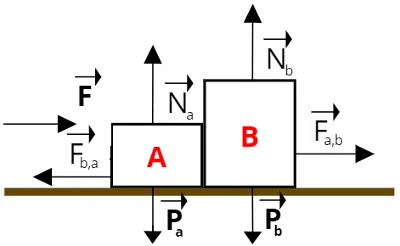

Diagrama de Forças
Um Diagrama de forças (ou Diagrama de corpo livre) é a representação gráfica de todas as forças que atuam sobre um objeto isolado, mostradas por meio de setas chamadas vetores.
Principais Forças Representadas:
Força Peso (P): Ação da gravidade puxando o objeto verticalmente para baixo (P = m ⋅ g).
Força Normal (N): Força de reação que a superfície exerce sobre o objeto, sempre perpendicular (formando 90°) ao plano de contato.
Força de Atrito (Fat): Força de resistência que surge entre as superfícies em contato, apontando no sentido oposto à tendência de movimento ou ao movimento real.
Força de Tração (T): Força exercida por fios, cabos ou cordas puxando o objeto.
Força Elástica (Fel): Força gerada por molas ou elásticos quando esticados ou comprimidos.
Como construir um diagrama:
1. Isole o corpo: Desenhe apenas o objeto de interesse, ignorando o resto do cenário.
2. Identifique o centro de massa: Marque um ponto central (ou use o próprio desenho do bloco) para a origem de todos os vetores.
3. Desenhe os vetores de força: Trace setas partindo do corpo para indicar a direção e o sentido de cada força atuante.
4. Aplique a Segunda Lei de Newton: Relacione a soma de todas as forças com a aceleração através de Fres = m ⋅ a